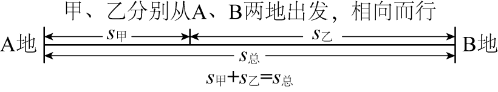
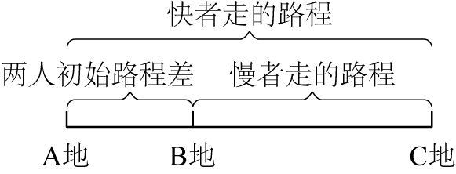
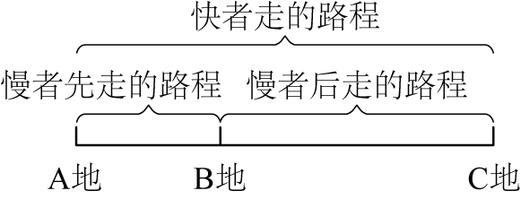
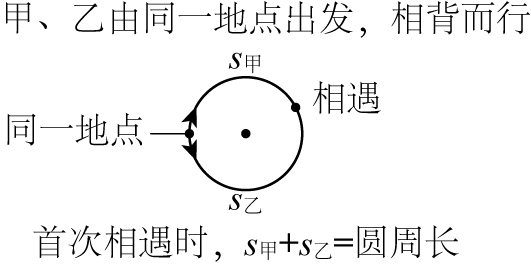
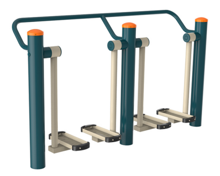
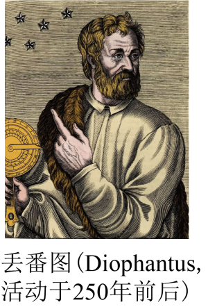
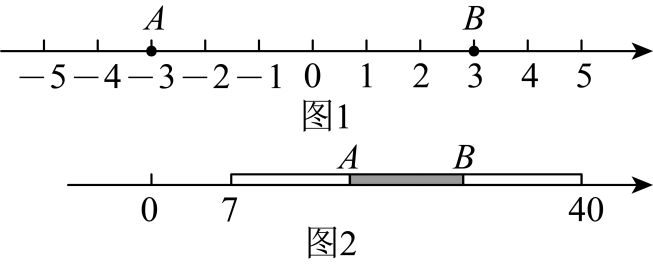
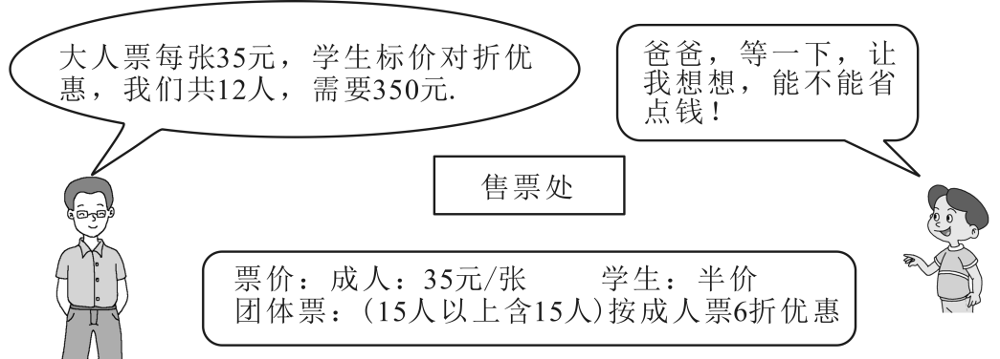

专题5.2 一元一次方程的应用（举一反三讲义）
【北师大版2024】

【题型1 配套问题】 3
【题型2 工程问题】 4
【题型3 营销问题】 5
【题型4 分段计费问题】 7
【题型5 球赛积分问题】 8
【题型6 行程问题】 10
【题型7 利息问题】 11
【题型8 年龄问题】 12
【题型9 古代数学问题】 13
【题型10 方案决策问题】 14
 知识点1 列方程解应用题的步骤
知识点1 列方程解应用题的步骤
审：弄清已知什么，求什么及其数量关系；
找：找出能表示题目全部含义的一个数量关系；
设：设未知数，可根据已知和所求选择直接假设或间接假设；
列：根据相等关系列出方程；
解：解方程；
检：检验求得的解是否正确及其是否符合实际意义；
答：写出答案．
知识点2 分析问题中的等量关系
1. 逐步列式法：例如，x+2的2倍比3x−6大5．首先写出“x+2的2倍”，即2(x+2)，它比3x−6大5，那么“大－小＝5”，即2(x+2)−(3x−6)=5．
2. 列表分析法：用行（或列）表示不同的项目或种类，用列（或行）表示相应的数量．
3. 画图分析法：用图形表示题目中的数量关系．例如，行程问题中常用线段示意图帮助分析相等关系．
知识点3 常见问题中的等量关系
1. 配套问题
相等关系：加工总量成比例，若一件产品需要A，B两种配件配成，A，B两种配件的数量比是a∶b，则A种配件总数量×b＝B种配件总数量×a．
2. 工程问题
（1）基本相等关系：工作量＝工作效率×工作时间，工作时间＝工作量工作效率，工作效率＝工作量工作时间；
（2）当问题中总工作量未知而又不求总工作量时，要把总工作量看作整体1；
（3）常见的相等关系为总工作量＝各部分工作量之和．
3. 营销问题
（1）相等关系：①利润＝售价－进价；②利润率=利润进价×100%；③售价＝进价×（1＋利润率）．
（2）打折：n折即标价的n10，如7折即标价的710（或70%），其中n叫折数．实际售价＝标价×折数10．
4. 分段计费问题
常见类型：我国公民个人所得税按分段累进税制计算；社会医疗保险实行分段累进按比例报销制度；为鼓励节约用水、用电、用气，水费、电费、煤气费实行分段价格收费标准；某些运营商的话费、出租车费实
行分段计费；商家为促销商品，实行分段优惠销售等．解决这些分段讨论问题的关键是理顺部分与整体的关系：①各段费用之和=总费用；②每一段的计费标准不同．
5. 球赛积分问题
点相等关系：（1）比赛总场数＝胜场数＋平场数＋负场数；
（2）比赛总得分＝胜场总得分＋平场总得分＋负场总得分．
6. 行程问题
基本相等关系：路程＝速度×时间；速度＝路程÷时间；时间＝路程÷速度．
（1）直线形相遇问题：甲走的路程＋乙走的路程＝两地之间的路程．

（2）直线形追及问题：快者走的路程＝慢者走的路程＋两人初始路程差；

快者走的路程＝慢者先走的路程＋慢者后走的路程．

（3）环形相遇问题：同起点、同时间、背向出发，首次相遇时，等量关系是二者合走了1圈；从出发到相遇所用时间＝环形周长二者速度和；第 n次相遇时，二者合走了n圈．

（4）环形追及问题：同起点、同时间、同向出发，首次相遇时，等量关系是快者比慢者多走1圈；追及所用时间＝环形周长二者速度差；第n次相遇时，快者比慢者多走n圈．
7. 利息问题
（1）本金×利率×期数＝利息（若未特别说明，银行定期存款的利率是指年利率，期数是年数)．
（2）本金＋利息＝本息和；本息和＝本金×（1＋利率×期数）．
8. 年龄问题
“年龄问题”的基本规律是不管时间如何变化，两人的年龄差总是不变的，抓住“年龄差”是解答年龄问题的关键．
9. 方案决策问题
方案决策问题是实际生活中常见的问题，用一元一次方程解最佳方案问题的一般步骤：（1）列代数式；
（2）列方程；（3）取特殊值试解；（4）决策．
【题型1 配套问题】
【例1】在手工制作课上，老师组织七年级（2）班的学生用硬纸制作圆柱形茶叶筒．七年级（2）班共有学生50人，其中男生人数比女生人数少2人，并且每名学生每小时可以剪筒身40个或剪筒底120个．
(1)七年级（2）班有男生、女生各多少人？
(2)原计划男生负责剪筒底，女生负责剪筒身，要求一个筒身配两个筒底，那么每小时剪出的筒身与筒底能配套吗？如果不配套，那么如何进行人员调配，才能使每小时剪出的筒身与筒底刚好配套？
【变式1-1】（24-25七年级上·辽宁盘锦·期中）制作一张餐桌要用一个桌面和4条桌腿．某家具公司的木工师傅用1m3木材可制作15个桌面或300个桌腿，公司现有18m3的木材．
(1)应怎样安排用料才能使制作的桌面和桌腿配套？
(2)家具公司欲将制作餐桌全部出售，一张餐桌可获利28%，全部出售后销售额为144000元．求每张餐桌的进价是多少？
【变式1-2】（24-25七年级上·浙江杭州·期末）列方程解应用题：有一批生产桌椅的木料，每块木料均相同．已知一块该木料可以生产桌子2张或椅子5把，如何分配78块这样的木料，可使生产的桌子和椅子恰好配套（一张桌子配4把椅子）？
【变式1-3】（24-25七年级上·云南昭通·期末）某工厂需要生产一批太空漫步器（如图），每套设备由一个架子和两套脚踏板组装而成；工厂现共有50名工人，每人每天平均生产65个支架或120套脚踏板．应如何分配工人才能使每天的生产的架子和脚踏板恰好配套？每天生产多少套太空漫步器？

【题型2 工程问题】
【例2】（24-25七年级上·全国·期末）某市道路改造工程，如果让甲工程队单独工作，需要45天完成，如果让乙工程队单独工作，需要90天完成．甲工程队施工每天需付工费2.5万元，乙工程队施工每天需付费1.3万元．
(1)甲、乙两个工程队一起合作多少天就可以完成此项工程？
(2)甲、乙两个工程队一起合作15天后，甲工程队因另有任务调离，剩下的部分由乙工程队单独做，问共需多少天才能完成此项工程？
(3)如果工程必需要在36天内（含36天）完成，如何安排两个工程队施工，才能使施工费最少？请说出你的安排方法，并求出所需要的施工费．
【变式2-1】（24-25七年级下·四川内江·期中）市中区欲将四方块打造成内江的“太古里”，现一期工程已基本完工，即将进入道路施工阶段．该工程由甲队单独完成需要24天，由乙队单独完成需要16天．甲、乙两队合作施工一段时间后，由于乙队另有任务离开，剩下的工程由甲队单独施工完成．甲队单独施工完成剩余工程的时间比两队合作施工的时间少4天．
(1)求甲、乙两队合作施工的时间．
(2)施工完成后，两队共获得工程款30万元，若按每队所完成的工程量进行分配，甲、乙两队各获得工程款多少万元？
【变式2-2】（24-25七年级上·山东日照·期末）为打造安全环保的某河流公园，某市设立若干河流排污治理点（每个治理点需安装相同长度的排污治理管道）．一天，甲队3名工人去完成5个治理点的管道铺设，但还有60米管道没有完成；同一天，乙队4名工人完成5个治理点的管道铺设后，还多铺设了40米管道．已知每名甲队工人比每名乙队工人每天多铺设20米管道．
(1)若设每个排污治理点需铺设的管道长度为x米，
①则甲队共铺设管道________米，乙队共铺设管道________米．（用含x的式子表示）
②求每个排污治理点需铺设的管道长度；
(2)已知每名甲队工人每天需支付费用500元，每名乙队工人每天需支付400元，该市某处共设立27个排污治理点，现有甲队3名工人，乙队4名工人来安装管道，
方案一：全部由甲队安装；
方案二：全部由乙队安装；（不到一天需按一天费用算）．
请通过计算说明选择哪种方案可使总费用最少？
【变式2-3】（24-25六年级上·黑龙江哈尔滨·期末）甲、乙公司一起竞标了一项工程．若甲、乙公司分别单独完成此工程，甲公司需要的天数与乙公司需要的天数的比为2：3，且甲公司需要的天数比乙公司需要的天数少用10天．
(1)如果甲、乙公司同时获批合作完成，需要多少天完成？
(2)若甲、乙公司合作10天后，甲公司有事离开，剩下的工程由乙公司单独完成，则乙公司还需要多少天可以完成此工程？
(3)在（2）的条件下，此施工过程中，每天补助100元，是乙公司每天雇佣费用的10%，且乙公司每天的雇佣费用比甲公司每天雇佣费用的45还少200元，完成此工程的总费用为多少元？
【题型3 营销问题】
【例3】某店用10000元的资金购进A，B两种商品共400件，并在“双十二”期间销售，两种商品的进价和售价如表所示：
进价（元） | 售价（元） | |
A | 40 | 60 |
B | 20 | 30 |
(1)求A商品购进的数量．
(2)A商品售出14,B商品售出13后，由于销售情况不理想，该店推出“买一件A商品送一件B商品，单独购买B商品优惠m元”的促销活动．一段时间后，A，B两种商品全部售完．已知剩余的A商品都参加了促销活动，销售A，B两种商品共获利2125元，求m的值．
【变式3-1】（24-25七年级上·全国·期末）某体育用品店在“双十一”期间特别准备篮球和足球进行促销活动，其中每个篮球的进价比每个足球的进价多5元，购进5个篮球和4个足球共需700元．
(1)篮球和足球的进价分别是多少元？
(2)该店购进了篮球和足球共120个，篮球在进价的基础上加价25%进行标价，足球在进价的基础上加价25元进行标价，若按标价售完全部篮球和足球共可获利2600元，求该店购进的篮球和足球分别是多少个？
(3)在（2）的条件下，“双十一”期间，若篮球按标价9.5折出售，足球按标价先卖出14个，余下的部分按标价降价10%出售，若篮球和足球全部售出，该店可获得利润多少元？
【变式3-2】（24-25七年级下·江西赣州·期末）2024年2月下旬，我省各地中小学陆续正常开学．开学之际，学生对书包的需求量增加．某班数学兴趣小组对某商场进行调研后了解到如下信息：
信息一 | 信息二 |
商场从厂家购进A、B两款书包，其中A款书包7个，B款书包5个，共付款650元，已知每个B款书包的进价比每个A款书包贵10元． | 商场将B款书包按信息一中的进价提高50%后标价，实际销售时再打折出售，此时每个B款书包仍可获利20%． |
(1)求每个A款书包和B款书包的进价；
(2)在信息二中，B款书包实际销售时打多少折出售？
【变式3-3】（24-25七年级上·甘肃张掖·期末）为开展好校园足球活动，某些学校计划联合购买一批足球运动装备，经市场调查，甲、乙两商场分别以同样的价格出售同种品牌的足球队服和足球．已知每套队服比每个足球贵20元，购买一套队服和一个足球共需花费180元．
(1)求每套队服和每个足球的售价分别是多少？
(2)甲商场推出的优惠方案是：每购买10套队服，送一个足球；乙商场推出的优惠方案是：若购买队服超过90套，则队服原价，但购买足球打八折．若计划一共购买100套队服和mm>10个足球．
①请用含m的代数式分别表示出到甲商场和乙商场购买装备所花的费用；
②若学校的预算是12000元，选择在哪家商场购买的足球更多？
【题型4 分段计费问题】
【例4】某省公布的居民用电阶梯定价听证方案如下：
第一档电量 | 第二档电量 | 第三档电量 |
月用电量210度以下，每度价格0.52元 | 月用电量210度至350度，每度比第一档次提价0.05元 | 月用电量350度以上，每度比第一档提价0.30元 |
例：若某户月用电量400度，则需交电费的计算过程如下
210×0.52+350−210×0.52+0.05+400−350×0.52+0.30=230元．
(1)如果按此方案计算，小华家5月份的电费为160.5元，请你求出小华家5月份的用电量；
(2)依此方案，请你用学过的数学方法说明：若小华家某月的电费为a元，则小华家该月用电量属于第几档？
【变式4-1】（24-25九年级上·福建南平·期中）某小区停车场24小时开放，根据车流量情况和汽车驶入和离开的时段分段收费，如图所示：
停车时段 | 收费单价 |
8:00~20:00 | 15元/时（最高收取费用80元） |
20:00~次日8:00 | 5元/时（最高收取费用30元） |
备注：停车时间10分钟内不收取费用，超过10分钟且未满1小时按照1小时收费，以此类推，如∶停车时间为1小时10分钟则按照2小时收费． | |
(1)小明某日9:00汽车驶入小区停车场a（a为整数）小时，在当日的时间段20:00~24:00内离开，用含a的代数式表示小明汽车的停车费用．
(2)若小明此次的停车费用为95元，请你估计小明的汽车离开的时间？
【变式4-2】某医疗保险产品对住院病人的费用实行分段报销，报销细则如下表．
住院医疗费（元） | 报销率（%） |
不超过500元的部分 | 0 |
超过500～1000元的部分 | 60 |
超过1000～3000元的部分 | 80 |
…… | …… |
(1)若某人住院的医疗费是950元，那么此人报销所得金额是多少元?
(2)若某人的住院治疗费用报销所得金额是1580元，求此人住院的医疗费．
【变式4-3】（24-25七年级上·浙江宁波·期中）某人去水果批发市场采购苹果，他看中了A,B两家苹果．这两家苹果品质一样，零售价都为6元/千克，批发价各不相同．
A家规定：批发数量不超过1000千克，按全部零售价的92%优惠；批发数量超过1000千克不超过2000千克，按全部零售价的90%优惠；超过2000千克的按全部零售价的88%优惠．
B家的规定如下表：
数量范围（千克） | 不超过500部分 | 超过500，但不超过1500的部分 | 超过1500，但不超过2500的部分 | 超过2500的部分 |
价格（元） | 售价的95% | 零售价的85% | 零售价的75% | 零售价的70% |
【表格说明：批发价格分段计算，如：某人批发苹果2100千克，则总费用
=6×95%×500+6×85%×1000+6×75%×2100−1500
(1)如果他批发600千克苹果，请计算出他在A家、B家批发各需要多少元？
(2)如果他批发x千克苹果(2000<x<2500)，则他在A家批发需要________元，在B家批发需要________元（用含x的代数式表示）；
(3)现在他要批发10956元苹果，应该选择哪一家水果店？请说明理由．
【题型5 球赛积分问题】
【例5】（24-25六年级下·山东烟台·期中）某次足球联赛的积分规则是：每队胜一场得3分，平一场得1分，负一场得0分．本次联赛中，已知A队在前25场比赛中共积52分，且胜的场数是负的场数的5倍．
(1)设A队在前25场比赛中负x场，请用含x的式子将下表填写完整；
A队 | 场数（单位：场） | 积分（单位：分） |
胜 | _______ | _______ |
平 | _______ | _______ |
负 | x | 0 |
总计 | 25 | 52 |
(2)求A队在前25场比赛中，胜、平、负的场数各是多少？
【变式5-1】（24-25七年级下·河南南阳·期中）某中学七年级各班举行篮球比赛，前四名班级的积分信息如下表：
名次 | 班级 | 比赛场次 | 胜场 | 负场 | 积分 |
1 | 二班 | 8 | 8 | 0 | 16 |
2 | 七班 | 8 | 7 | 1 | m |
3 | 五班 | 8 | 5 | 3 | n |
4 | 一班 | 8 | 4 | 4 | 12 |
(1)由表中信息可以看出，胜一场积 分，负一场积 分；
(2)请直接写出：m= ，n= ；
(3)若某班级8场比赛的积分为10分，求该班级胜几场；
(4)小明说某班级8场比赛的积分为7分，他的说法正确吗？若正确，该班级胜几场？若不正确，说明理由．
【变式5-2】（24-25七年级上·湖北武汉·期末）某电视台组织知识竞赛，共设20道选择题，各题分值相同，每题必答．如表记录了4个参赛者的得分情况：
参赛者 | 答对题数 | 答错题数 | 得分 |
A | 20 | 0 | 100 |
B | 19 | 1 | 92 |
C | 15 | 5 | 60 |
D | 14． | 6 | 52 |
根据表中的信息解答下列问题：
(1)参赛者E得68分，求他答对了几道题？
(2)参赛者F说他答对的题所得的分数是答错题所扣分数的4倍，你认为可能吗？请你利用所学的一元一次方程知识来说明你的理由．
【变式5-3】（24-25七年级上·湖北武汉·期末）在某市排球“新年杯”比赛中，参赛队伍为12支，比赛采取单循环方式，五局三胜制，积分规则如下，比赛中以3:0或者3:1取胜的球队积分3分，负队积0分；而在比赛中以3:2取胜的球队积2分，负队积1分，前四名队伍积分榜部分信息如下表所示：
球队 | 场次 | 胜场 | 负场 | 总积分 |
教体 | 11 | 11 | 0 | |
科技 | 11 | 10 | 1 | 28 |
工商 | 11 | 8 | 3 | |
公安 | 11 | 24 |
(1)教体队11场胜场中仅有一场以3:2取胜，则教体队的总积分为_________．
(2)公安队积3分取胜的场次是积2分取胜的场次的3倍，且负场总积分为2分．总积分见上表，求公安队负场的场数．
(3)科技队积3分的胜场数为奇数，则科技队积3分的胜场数为_______场；工商队积3分的胜场数比科技队积3分的胜场数少1场，且工商队负场总积分为3分，则工商队总积分为_______分
【题型6 行程问题】
【例6】（24-25七年级上·辽宁抚顺·期末）已知A，B，C三地依次在同一条直线上，A，C两地距离465千米，A，B两地距离330千米．
(1)现有甲、乙两车分别从A，B两地相向而行，两车均保持匀速行驶且甲车的速度是乙车速度的3倍，若甲车比乙车提前1小时出发，则甲车出发后3小时两车相遇．求甲、乙两车的速度分别是多少千米/小时？
(2)如果甲、乙两车分别从A，B两地同时出发，向C地行驶，两车保持（1）中的速度，求经过多少小时两车相距30千米？
【变式6-1】（24-25七年级下·吉林长春·期末）从甲地到乙地，汽车原需行驶7h可到达，开通高速公路后，路程缩短了30km，车速平均每小时增加了30km，结果只需4h即可到达．求甲乙两地之间的高速公路的路程．
(1)若设汽车原来的车速为xkm/h，则在高速公路上的车速为______km/h，根据两地前后的路程关系可列方程为______；若设甲、乙两地高速公路路程是ykm，则两地原来的路程为______km，根据两地前后的速度关系可列方程为______；
(2)选择（1）中的一种设元方式解答问题．
【变式6-2】一条河中有甲、乙两艘船，现它们同时从A地顺流而行，乙船到B地时接到通知要立即调头(调头时间不计)到A，B两地之间的C地执行任务，甲船则继续顺流而行．已知甲、乙两艘船在静水中的速度都是7.5千米/时，水流速度是2.5千米/时，A，C两地的距离为10千米．如果乙船由A地经B地再到C地共用4小时，那么乙船从B地到C地时，甲船驶离B地多少千米？
【变式6-3】（24-25六年级下·山东泰安·期中）中华优秀传统文化是中华民族的“根”和“魂”，是我们必须世代传承的文化根脉和文化基因．为了让学生在校园内就能接触到丰富多彩的传统文化，某校开展学习传统文化技艺的活动——制作手工扇子．现委派张老师和李老师到材料批发市场购买所需物品．
(1)两位老师相约从学校出发共同前往材料批发市场，但张老师因有事耽搁，故李老师骑自行车先行出发，20分钟后，张老师骑电动车前往，又走了20分钟后两人同时到达，已知电动车的平均速度比自行车平均速度多15km/h，求学校到材料批发市场的距离；
(2)按照计划采买完成后，李老师和张老师同时出发返回学校，且使用的交通工具和行驶的平均速度均不变．张老师在返程5分钟后忽然想起忘记采购手工扇子所需的流苏穗，便立即骑车原路折返，并在材料批发市场停留6分钟进行采购．
①请通过计算说明张老师能否在李老师到达之前赶回学校？
②求张老师返回批发市场过程中与李老师相遇的地点到批发市场的距离．
【题型7 利息问题】
【例7】李阿姨购买了50000元某公司1年期的债券，1年后扣除利息的20%之后得到本息和为52000元，问这种债券的年利率是多少？
【变式7-1】储户到银行存款可以获得一定的存款利息，同时银行还将代扣由储户向国家缴纳的利息税，税率为利息的20%．
(1)将8500元钱以一年期的定期储蓄存入银行，年利率为2.2%，到期支取时可以得到利息 元，扣除个人所得税后实际得到 元．
(2)小明的爸爸把一笔钱按一年期的定期储蓄存入银行，年利率为2.2%，到期支取时，扣除所得税后得本金和利息共计71232元，问这笔资金是多少元？
【变式7-2】已知银行一年期定期储蓄的年利率为3.25%．所得利息要缴纳20%的利息税，例如：某人将100元按一年期的定期储蓄存入银行，到期储户纳税后所得利息的计算公式为：税后利息=100×3.25%−100×3.25%×20%=100×3.25%1−20%．已知某储户有一笔一年期的定期储蓄，到期纳税后，得到利息650元，问：该储户存入了多少本金？
【变式7-3】某开发商按照分期付款的形式售房，小明家购买了一套总价为120万元的新房，购房时首付（第一年）款40万元，从第二年起，以后每年应付房款为5万元与上一年剩余欠款的利息之和．已知剩余欠款的年利率为5.0%，问：
(1)小明家第二年需缴房款多少万元？
(2)第几年小明家需缴房款6.75万元？
【题型8 年龄问题】
【例8】（24-25七年级上·河南驻马店·期末）丢番图（Diophantus）是古希腊数学家．人们对他的生平事迹知道得很少，但流传着一篇墓志铭叙述了他的生平：坟中安葬着丢番图，多么令人惊讶，它忠实地记录了其所经历的人生旅程．上帝赐予他的童年占六分之一，又过十二分之一他两颊长出了胡须，再过七分之一，点燃了新婚的蜡烛．五年之后喜得贵子，可怜迟到的宁馨儿，终年仅及其父之半便入黄泉．悲伤只有用数学研究去弥补，又过四年，他也走完了人生的旅途．——出自《希腊诗文选》（TheGreekAnthology）第126题

根据以上信息，请你算出：
(1)丢番图的寿命；
(2)丢番图开始当爸爸时的年龄；
(3)儿子去世时丢番图的年龄．
【变式8-1】（24-25六年级上·上海·期末）小郑今年12岁，比妈妈的年龄小28岁，几年后，小郑的年龄是妈妈的一半？
【变式8-2】（24-25六年级下·山东青岛·期中）有一户人家，父亲和儿子同一天过生日．若父子两人的年龄加起来是100岁，则称为“百岁父子”．已知父亲38岁时，儿子10岁，现在父亲是儿子年龄的2倍，请解决如下问题：
(1)现在父亲多少岁？
(2)再过几年，父子两人可以称为“百岁父子”？
【变式8-3】（24-25七年级上·江西吉安·阶段练习）根据所学的数轴知识，解答下面的问题：

(1)知识呈现：在数轴上有A，B两个点，如图1所示，A点表示的数是__________；B点表示的数是__________．
(2)知识迁移，如图2，将一根木棒放在数轴（单位长度为1cm）上，木棒左端与数轴上的点A重合，右端与数轴上的点B重合．
①若将木棒沿数轴向右水平移动，则当它的左端移动到点B时，它的右端在数轴上所应的数为40；若将木棒沿数轴向左水平移动，则当它的右端移动到点A时，它的左端在数轴上所对应的数为7，由此可得这根木棒的长为__________cm；
②图中点A所表示的数是__________，点B所表示的数是__________．
(3)知识应用：由（2）中①、②的启发，请你借助“数轴”这个工具解决下列问题：
一天，玲玲去问爷爷的年龄，爷爷说：“我若是你现在这么大，你还要40年才出生；你若是我现在这么大，我已经125岁，是老寿星了．哈哈！”请问爷爷现在多少岁了？
【题型9 古代数学问题】
【例9】我国明代数学著作《算法统宗》中有这样一首诗：“我问开店李三公，众客都来到店中，一房七客多七客，一房九客空一房”，诗的后两句的意思是：如果每一间客房住7人，那么有7人无房可住；如果每一间房住9人，那么就空出一间房．
(1)列方程解答下面问题：该店有客房多少间？到了多少房客？
(2)假设李三公将客房进行改造后，房间数大大增加，每间房收25钱，且每间房最多入住4人，一次性订房少于10间，不予优惠；不低于10间但低于20间，给予九折优惠；等于20间或是超过20间的，给予七折优惠；若诗中的“众客”再次一起入住，他们如何订房更合算？说明理由．
【变式9-1】（24-25七年级上·福建福州·期末）《九章算术》是我国古代第一部数学专著，成于公元一世纪左右，此专著中有这样一道题：今有共买羊，人出五，不足四十五；人出七，不足三，问人数、羊价几何？这道题的意思是：今有若干人共买一头羊，若每人出5文钱，则相差45文钱；若每人出7文钱，则仍然相差3文钱，求买羊的人数和这头羊的价格．
【变式9-2】在我国明代数学家吴敬所著的《九章算术比类大全》中，有一首数学名诗叫“宝塔装灯”．内容为“远望巍塔七层，红灯点点倍加增：共灯三百八十一，请问顶层几盏灯？”，大致意思是有一座七层高塔，从底层开始，每层安装的灯的数目都是上一层的2倍，共有381盏灯，请你算出塔的顶层有多少盏灯．
【变式9-3】我国古代有很多著名的典型数学问题，请列一元一次方程解下列应用题．
①周瑜寿属：而立之年督东吴，早逝英年两位数；十比个位正小三，个位六倍与寿符；哪位同学算得快，多少年寿属周瑜？意思是：周瑜病逝时的年龄是一个大于30的两位数，其十位数上的数字比个位上的数字小3，个位上的数字的6倍正好等于这个两位数，求这个两位数．
②《孙子算经》是我国古代的重要数学著作，其中记载的“百鹿入城”问题很有趣．原文如下：今有百鹿入城，家取一鹿不尽，又三家共一鹿适尽，问城中家几何？其大意为：现在有100头鹿进城，每家领取一头后还有剩余，剩下的鹿每三家分一头，则恰好取完．问城中共有多少户人家？
【题型10 方案决策问题】
【例10】小麦和父母去某火锅店吃火锅，点了270元的商品，其中包含一份50元的鸳鸯锅底．用餐完毕后，小麦去付款，发现店家有两种优惠方式，并规定两种优惠方式不能同时享受．
优惠方式A | 可使用“50元抵100元的全场通用代金券”（即面值100元的代金券实付50元就能获得）．店家规定代金券不兑现、不找零，最多可叠加使用3张． |
优惠方式B | 除锅底不打折外，其余菜品全部打□折． |
小麦选择优惠方式B计算，发现自己需要付款182元．
(1)请用一元一次方程的知识计算一下，优惠方式B，除锅底不打折外，其余菜品打几折？
(2)小麦如何付款最省钱？
【变式10-1】（24-25七年级上·重庆·期末）在清明节间，小明和小亮等同学随家人一同到苏州去游玩，如图是购买景区门票时，小明与他爸爸的对话：

问题：
(1)小明他们一共去了几个成人？几个学生？
(2)用哪种方式买票更省钱，说明其中的理由及能节省多少钱？
【变式10-2】（24-25七年级上·河北保定·期末）我校体育组决定购买羽毛球和羽毛球拍若干．甲、乙两家体育用品商店出售同一品牌同一规格的羽毛球和羽毛球拍，羽毛球每个定价8元，羽毛球拍每副定价80元、现两家商店都在搞促销活动：甲店每出售一副球拍赠2个羽毛球；乙店球拍和羽毛球均按九折优惠．若体育组需购x(x≤150)副球拍，300个羽毛球．根据题意完成下列问题．
(1)购买方案一：全部到甲商店购买，需付款______元；购买方案二：全部到乙商店购买，需付款______元；（用含x的代数式表示）
(2)当x取何值时，两种方案所需费用相等？
(3)当x=50，请根据甲、乙两商店的促销信息，判断是否有比（1）中两个方案更优惠的购买方法，如果有，写出方案并列式求出所需费用；如果没有，请说明理由．
【变式10-3】（24-25七年级上·浙江台州·期末）牛肉火锅店元旦促销，推出以下两种优惠方式（不能同时使用）：
方案A | 在某团上可购买“50代100元代金券”（实付50元就能获得100元的代金券），消费每满100元才能使用1张代金券，最多使用3张． |
方案B | 除每桌50元的锅底外，其余菜品均打6折． |
(1)若小明一家去该火锅店吃火锅，消费总额原价为220元，并使用方案A买单，实际付款______元；
(2)若小芳一家去该火锅店吃火锅，并使用方案B方式买单，结账时实际付款308元，请问优惠前消费总额是多少元？
(3)若小红一家在该火锅店点了一份锅底和其它菜品（消费总额原价超过100元），小红对比两种优惠方式后，发现方案A比方案B贵了30元，请问小红一家消费总额原价是多少？从实惠的角度，实际付款多少钱？